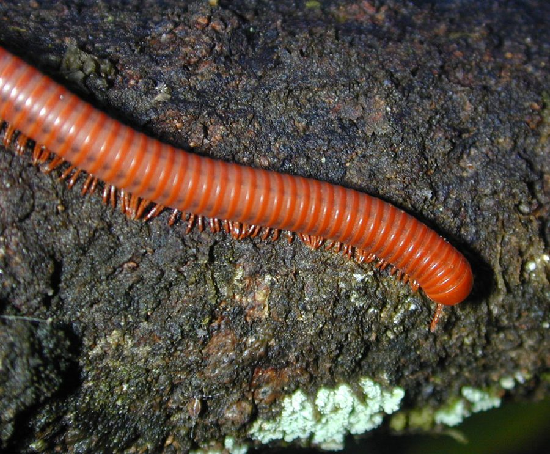

लाल सहस्रपादRusty Millipede
Trigoniulus corallinus · Trigoniulidae · MYR-0002

- Scientific name
- Trigoniulus corallinus (Gervais, 1847)
- Family
- Trigoniulidae
- Hindi
- लाल सहस्रपाद / कँखजूरा
- Status here
- native
- IUCN
- not evaluated
When to look कब देखें
Expected mainly in June, July, August, September, October, November.
लाल सहस्रपाद / Rusty Millipede
Trigoniulus corallinus (Gervais, 1847) — Trigoniulidae
लाल सहस्रपाद — बगीचे की गीली मिट्टी और पत्ती-कूड़े में रेंगने वाला छोटा-सा लाल-ईंट रंग का सहस्रपाद। पूर्वी UP के बागों में सबसे आसानी से पहचाने जाने वाला — इसका रंग और किसी मिलीपीड का नहीं। सड़ी पत्तियाँ और लकड़ी खाकर मिट्टी बनाता है — बाग का अदृश्य खाद कर्मचारी। छूने पर हल्की बादामी महक आती है (HCN) पर इंसान के लिए बिल्कुल हानिरहित।
Quick Identification त्वरित पहचान
| Feature | Description |
|---|---|
| Colour | Bright brick-red to rust-orange — unique; no other common UP millipede has this colouration |
| Size | 2–3 cm length; 2–3 mm diameter; cylindrical |
| Legs | ~80–100 pairs; pale cream-yellow; two pairs per body segment |
| Movement | Slow smooth gliding motion driven by metachronal leg waves |
| Defence | Coils into tight spiral when disturbed — does NOT form a perfect closed ball |
| Smell | Faint almond-like smell (hydrogen cyanide) when handled — harmless |
| Habitat | Under leaf litter, damp logs, compost — post-monsoon garden soil |
Field tip: Any small rust-red cylindrical creature in garden leaf litter coiling into a spiral when disturbed is a Rusty Millipede — nothing else looks like it in eastern UP. The brick-red colour is visible even in damp leaf litter. Distinguish from centipedes: millipedes have two leg-pairs per segment, move slowly, and have a round (not flat) body. Completely harmless despite the faint smell.
Morphology आकारिकी
| Feature | Measurement |
|---|---|
| Body length | 2–3 cm |
| Body diameter | 2–3 mm |
| Body segments | 40–55 in adults |
| Leg pairs | ~80–100 (two pairs per diplosegment) |
Body colour: Bright brick-red to rusty-orange; often slightly darker on the dorsal surface; legs pale yellow-cream.
Body form: Cylindrical, elongated; each diplosegment (double segment) bears two pairs of legs.
Head: Small, rounded; one pair of short antennae (7-segmented); simple ocelli (eye spots) in a cluster.
Defence posture: Coils tightly when disturbed — head protected inside the coil — but does not form a closed sphere.
Sexual dimorphism: Males have gonopods (modified reproductive legs) replacing a pair of walking legs near the anterior end.
Ecological Role पारिस्थितिक भूमिका
Detritivore — garden soil recycler: Trigoniulus corallinus is one of the most ecologically important decomposers of leaf litter, rotting wood, and plant debris in gardens and agricultural fields of eastern UP. By shredding dead organic material into fine fragments, it dramatically accelerates microbial decomposition — effectively composting the soil surface layer continuously through the monsoon season.
Soil structure improvement: As millipedes burrow through the upper soil layer, they aerate the soil and mix organic material downward. The compacted clay soils common in the Ganga-Ghaghara alluvial plain benefit significantly from this mechanical mixing.
Nutrient cycling: Millipede frass (faecal material) is nutrient-rich and rapidly colonised by bacteria and fungi — making the products of millipede feeding immediately available for plant root uptake. In kitchen gardens and mango orchards, a healthy millipede population provides continuous slow-release fertilisation.
Cyanide defence — chemical ecology: Trigoniulus corallinus releases hydrogen cyanide (HCN) from glands along its body when threatened. The concentration is too low to harm humans but effectively deters ants, beetles, and most small predators.
Fungal dispersal: As millipedes move through soil and leaf litter consuming fungal hyphae and spores, they spread viable fungal spores through their frass — actively shaping the soil fungal community and promoting decomposer fungi.
Life Cycle / Phenology जीवन चक्र
| Month | Event |
|---|---|
| Jun–Jul | Emergence from deep soil with monsoon onset |
| Monsoon–Oct | Mating; male uses gonopods to transfer sperm packet; pairs coil together |
| Post-mating | Eggs laid in clusters of 20–60 in soil cavity constructed from chewed soil particles |
| Aug–Oct | Peak abundance; most visible |
| Nov–Dec | Retreat to deeper soil as cold arrives |
| Apr–May | Dormancy in deep soil during hot, dry season |
Juvenile growth: Hatch with only 3 pairs of legs; leg pairs added at each moult (stadium); new segments added at each moult from a growth zone above the telson. Maturity reached after 6–8 moults over 4–6 months. Lifespan: 2–5 years. Adults continue to moult through life; eat shed exoskeleton to recapture calcium and mineral salts.
Agricultural / Human Relevance कृषि एवं मानव उपयोग
Garden and orchard decomposer — highly beneficial: The presence of Trigoniulus corallinus in a kitchen garden or mango orchard indicates healthy, organic-matter-rich soil and moderate moisture — conditions associated with good crop productivity.
Food sources (detritivore): Decomposing leaf litter (especially fallen mango, Ficus, and mahua leaves), rotting wood and bark, fungal hyphae and spores, algae and moss on moist surfaces, and decaying plant roots.
Pesticide sensitivity — soil health indicator: Trigoniulus populations crash rapidly following soil pesticide application, particularly organophosphates and carbamates. Their absence from a formerly-productive garden after pesticide use is an early warning of soil ecosystem degradation.
HCN safety: Despite producing hydrogen cyanide, the quantities released by Trigoniulus are entirely harmless to humans. Children and farmers can handle them safely. The reddish-brown stain left on fingers after handling is from the defensive secretion — harmless, washes off with water.
Traditional knowledge gap: Millipedes are often killed on sight due to superficial resemblance to centipedes. Community education distinguishing millipedes (harmless decomposers) from centipedes (venomous predators) is a direct actionable conservation output.
Expected Locally स्थानीय रूप से अपेक्षित
Not a field record. Written from published accounts for eastern Uttar Pradesh. No confirmed local sighting yet — if you have seen it, that is what the atlas needs.
अभी तक स्थानीय पुष्टि नहीं। यह विवरण प्रकाशित स्रोतों से है, किसी अवलोकन से नहीं।
Common in garden soil, under flowerpots, and at the edges of compost heaps throughout Basti district during July–October. The bright rusty-red colour makes them immediately identifiable even without close examination. Overcast or post-rain days are best for surface sightings. Night searches with a torch in vegetable gardens reveal them moving slowly through leaf litter. They are far more common than most residents realise — their slow, smooth movement and tendency to coil and stay still when disturbed means they are often overlooked.
Distribution वितरण
Global range: Widely distributed across tropical Asia — India, Sri Lanka, Bangladesh, Southeast Asia, and Pacific islands. Also recorded in parts of Africa and the Caribbean (likely introduced). One of the most commonly encountered millipedes in human-modified tropical landscapes.
In India: Found throughout warm tropical and subtropical zones — peninsular India, the Gangetic plain, and northeast India.
In Uttar Pradesh: Present across the state in garden soil, orchard leaf litter, and agricultural compost. Most common in areas with abundant fallen leaf material and moderate soil moisture.
In Basti district / eastern UP: Very common in kitchen gardens, mango orchards, and shaded garden soil. Active June–November; dormant in deep soil December–May.
Research Questions शोध प्रश्न
- Is Trigoniulus corallinus the dominant millipede species in eastern UP gardens and agricultural soils, or are there native flat-backed (Polydesmida) or julid species more abundant in certain habitats?
- Does the HCN released by Trigoniulus suppress ant activity around millipede aggregations — and does this have a measurable effect on soil ant diversity in gardens where millipede populations are high?
- How do millipede populations respond to the shift from organic to chemical fertiliser — are there measurable differences in Trigoniulus density between traditionally managed kitchen gardens and chemically-farmed fields?
- Do Trigoniulus show microhabitat preferences within a garden — under certain tree species, in specific soil moisture bands, at certain depths?
- Can children's millipede-handling behaviour serve as a gateway for informal science education about soil ecology?
Similar Species मिलती-जुलती प्रजातियाँ
| Species | Key Difference |
|---|---|
| Banded Indian Centipede (Scolopendra morsitans, MYR-0001) | One pair of legs per segment (not two); flat body; fast-moving; venomous; not red |
| Flat-backed Millipede (Anoplodesmus saussurii) | Dark brown with yellow lateral flanges; flattened body; does not coil |
| Garden Millipede (Oxidus gracilis) | Smaller (1.5–2 cm); brown-black; flattened body; no rust-red colour |
| Earthworm (Metaphire posthuma, SFL-0002) | Soft, no legs; pink-cream; completely different body plan |
Taxonomy & Classification वर्गीकरण
Original description. Trigoniulus corallinus was described by Paul Gervais in 1847 in Histoire naturelle des insectes aptères, Vol. 4. The species epithet corallinus refers to the coral-red colouration (corallium = coral in Latin). The genus Trigoniulus Cook, 1895 takes its name from the three-angled shape of the segments (trigonum = triangle).
Subspecies. No subspecies are formally recognised; Trigoniulus corallinus is treated as monotypic. Its wide distribution across tropical Asia suggests it may represent a species complex, pending molecular resolution.
Family and order placement. Belongs to the order Spirobolida, family Trigoniulidae. The order Spirobolida contains approximately 1,000 described species of cylindrical millipedes. The family Trigoniulidae contains approximately 10 genera of small tropical millipedes. The order Spirobolida is characterised by the production of hydrogen cyanide (HCN) as a defensive chemical — a convergent evolution of cyanogenesis found also in some Polydesmida.
Phylogenetic notes. Molecular phylogenetics places Trigoniulus within the Spirobolida, a sister group to the larger julid millipedes of temperate regions. The cylindrical body form (common to all Spirobolida) provides mechanical protection by allowing tight coiling. The HCN defence system uses benzaldehyde cyanohydrin as a precursor, released when the millipede is mechanically stressed — a highly efficient deterrent against small arthropod predators.
IUCN status rationale. Trigoniulus corallinus has not been formally assessed by the IUCN Red List. As a widely distributed, human-commensal detritivore associated with tropical gardens and agricultural systems, it is not of conservation concern globally. Local populations may be affected by heavy pesticide use.
Photo Gallery फोटो गैलरी
Atlas Connections संबंधित प्रजातियाँ
- AMP-0001 Common Toad — primary predator; tolerant of millipede HCN at field concentrations
- MAM-0002 Small Indian Mongoose — digs through leaf litter; rolls millipede on ground to discharge defensive HCN before consuming
- MYR-0001 Indian Centipede — primary arthropod predator; immune to millipede HCN
- FLR-0011 Mango — orchard leaf litter is primary food substrate; millipede decomposition accelerates leaf breakdown under mango trees
References संदर्भ
- Gervais, P. (1847). Histoire naturelle des insectes aptères, Vol. 4. Librairie encyclopédique de Roret, Paris.
- Jeekel, C.A.W. (1963). On the taxonomy and biogeography of some Indo-Australian Spirobolida. Zoologische Mededelingen, 38: 177–205.
- Enghoff, H., Dohle, W. & Blower, J.G. (1993). Anamorphosis in millipedes (Diplopoda). Zoological Journal of the Linnean Society, 109: 103–234.
- Zoological Survey of India. Fauna of Uttar Pradesh — Myriapoda. ZSI, Kolkata.
- GBIF Occurrence Data — Trigoniulus corallinus, South Asia (2026). GBIF taxon key: 1026972.
Source file: species/fauna/myriapods/rusty_millipede.md